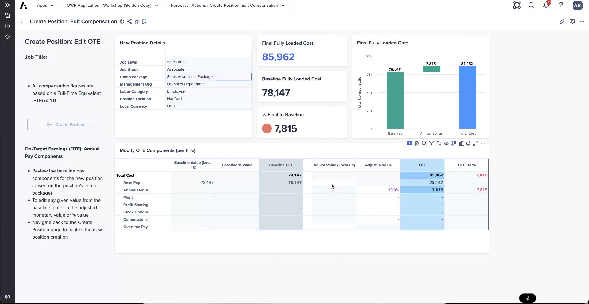

Lab: Create & Cost a Position
Create a position and fine-tune its fully-loaded cost
These steps follow what was shown in the workshop demo. Exact page names, button labels, and values vary by release and by your training tenant — treat the steps as a guide and confirm as you go. The Check my work button records your attempt; automated validation against Anaplan is not wired up yet.
What you'll do
- Use Plan actions in your Continuous Position Plan (CPP) to create a Sales Rep position
- Open Edit Compensation (Edit OTE) and read the baseline fully-loaded cost
- Reduce base pay and add a 10% annual bonus in the Modify OTE Components grid
- Confirm the final fully-loaded cost using the 78,147 → +7,815 → 85,962 flow
- See why the CPP is where you fine-tune cost, rather than the budget side
1 — Create a Sales Rep position
Position creation lives under Plan actions in the CPP. Start a new Sales Rep position so you have something to cost.
In your tenant, open the Continuous Position Plan (CPP) and go to Plan actions → Create Position.
Pick the Sales Rep job when prompted, and set the org and start details your tenant asks for.
- From Plan actions, choose Create Position (the same menu also offers create many positions and edit plan positions in bulk).
- Select the Sales Rep job and confirm the management org the position should sit in.
- Note the out-of-the-box fully-loaded cost the app assumes for the position before you touch anything — in the demo this baseline is 78,147.
- Watch for guardrails via dynamic text rather than hard errors — messages like "you don't have write access" or "your time to hire is too short for creating a position."
There is no approval queue for creating positions — Workflow routes the request to the right person instead. A queue does exist when editing plan / requested positions.
The number you fine-tune on this page is the position's fully-loaded cost. What does that figure represent?
2 — Edit Compensation: fine-tune the fully-loaded cost
The CPP lets you refine the cost to reflect the real, negotiation-aware number instead of the coarser budget-side assumption. Open Edit Compensation and work the OTE components.
In your tenant, on the new position choose Edit Compensation (Edit OTE).
Find the Modify OTE Components grid and the Base Pay / Annual Bonus / Total Cost chart alongside it.
- Open Edit Compensation (Edit OTE) and confirm the current baseline fully-loaded cost of 78,147.
- In the Modify OTE Components grid, reduce base pay to reflect the negotiated offer.
- Add a 10% annual bonus. In the demo this resolves to 7,815 (10% of the 78,147 baseline).
- Read the updated Total Cost: baseline 78,147 → add annual bonus +7,815 → final fully-loaded cost 85,962.
- Watch the Base Pay / Annual Bonus / Total Cost chart redraw as you edit, then save the position at the confirmed cost.

Edit Compensation (Edit OTE): the 78,147 baseline, a 10% annual bonus of 7,815, and the final 85,962 fully-loaded cost.
The cost can move up or down and is not locked once the position is created. The 7,815 bonus is derived from the 10% assumption against the baseline — it is not a flat figure you type in.
Why fine-tune a position's cost here in the CPP rather than on the budget (WFB) side?
When you've created the Sales Rep position, opened Edit Compensation, reduced base pay, added the 10% annual bonus, and confirmed the 85,962 fully-loaded cost, click below to verify.
Position created and costed.
- Sales Rep position created → started from Plan actions → Create Position, with org and start details set
- Baseline read → the out-of-the-box fully-loaded cost of 78,147 noted before editing
- Base pay reduced → adjusted in the Modify OTE Components grid to reflect the negotiated offer
- 10% annual bonus added → resolves to 7,815 against the baseline
- Final cost confirmed → 78,147 + 7,815 = 85,962 fully-loaded, and the position saved at that cost
Next up: transfer a position on a schedule.
Debrief Questions
- You confirmed a fully-loaded cost of 85,962. Break the number down: what is the baseline, what did adding the 10% annual bonus contribute, and how did reducing base pay factor in?
- A customer asks why they should cost the position in the CPP when they already budgeted it in WFB. How would you explain the difference between a budget-side assumption and CPP costing?
- The app used dynamic text ("you don't have write access", "your time to hire is too short") instead of a hard error. Why is that the design choice, and how would you set expectations with a customer about it?
- There is no approval queue for creating positions — Workflow routes the request instead. When would a customer expect a queue, and how would you position Workflow as the answer?